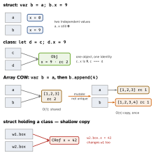

ios-swift · folio
In one line: A value type (struct, enum, tuple) is
copied on assignment / argument passing — every variable owns an
independent value. A reference type (class, actor,
closure) is shared — assignment copies the pointer, all variables
see one object with an identity (===). Default to
struct; reach for class when you need identity.
Download PDF Print view LaTeX source

How it works
- Equality vs identity:
=== same value (Equatable, auto-synthesised for structs/enums whose members conform).==== same object; classes only, never synthesised. letdiffers:let s = aStructfreezes the whole value (no property can change).let c = aClassfreezes only the reference —c.x = 1still compiles.mutating: a struct/enum method cannot modifyselfby default (selfis an immutable copy). Mark itmutating⇒selfis passed asinout; it may assign properties orself = …(enum state change). Callable only on avar— on aletit is a compile error. Classes never need it (they mutate through the reference).nonmutating set= storage lives elsewhere (how@Stateworks).inout= copy-in / copy-out (write-back on return), not a C pointer. Same var passed twice → exclusivity violation.- Copy-on-write (COW):
Array,Dictionary,Set,Stringare structs that wrap a private class buffer.b = acopies the header and bumps the buffer’s retain count — O(1), shared. The first mutation asksisKnownUniquelyReferenced(&buffer): false → copy the buffer (O(n)) then write; true → write in place. Keep one owner while mutating in a loop, or every append re-copies. - Your own struct gets NO COW for free. Memberwise copy is eager; a stored class property is copied as a pointer (shallow) — both copies share it. Want value semantics over a heap object? Write COW yourself (below).
- Stack vs heap is an optimiser detail, not the definition: a struct captured by an escaping closure or boxed in an existential lives on the heap; a class may be stack-promoted. Argue copy vs share.
Choosing
| struct (default) | class — only when you need |
|---|---|
| models, DTOs, geometry, state | identity (“the same” object) |
| no identity, thread-safe copies | inheritance |
Sendable almost for free | ObjC interop / NSObject |
| SwiftUI state diffs by value | deinit (cleanup) |
| protocols for polymorphism | shared mutable state, resources |
Example — COW by hand
final class Box<T> { var v: T; init(_ v: T) { self.v = v } }
struct Pixels { // value semantics
private var box: Box<[UInt8]> // shared heap buffer
init(_ b: [UInt8]) { box = Box(b) }
var bytes: [UInt8] { box.v } // reads: shared, free
mutating func set(_ i: Int, _ x: UInt8) {
if !isKnownUniquelyReferenced(&box) {
box = Box(box.v) // shared -> copy first
}
box.v[i] = x // unique -> in place
}
}
let p = Pixels([0, 0]); // p.set(0, 9) error: p is a letCopy, share, copy-on-write

Traps
- Calling a
mutatingmethod on aletstruct — compile error; the same call on aletclass instance compiles. - “Structs are COW.” Only the stdlib collections (class storage +
isKnownUniquelyReferenced); your own structs do not get it. - Picking a class for “shared state” alone — the four real reasons are identity, inheritance, ObjC interop,
deinit; otherwise struct. - “Structs live on the stack” — implementation detail, not semantics.
let arr = [S()]; arr[0].x = 1— compile error;letfreezes the elements too.- Closures are reference types: two copies share captured vars.
isKnownUniquelyReferencedtakesinout(&box), native Swift classes only; call it inside themutatingmethod.
What let / var lets you change
struct (value) | class (reference) | |
|---|---|---|
let x | nothing — no property, no rebind | its var properties; no rebind |
var x | any property, mutating methods | properties + rebind x |
| passed to a func | a copy (inout to write back) | the same object |
[2pt] Value:
struct enum tuples, Int String Array Dictionary Set
Optional. Reference: class actor closures, every NSObject (NSString,
NSMutableArray…).
Remember
Struct = photocopy, class = shared online document, COW = photocopy made lazily at the first pen stroke. I-I-O-D — Identity, Inheritance, ObjC, Deinit — the four reasons for a class.